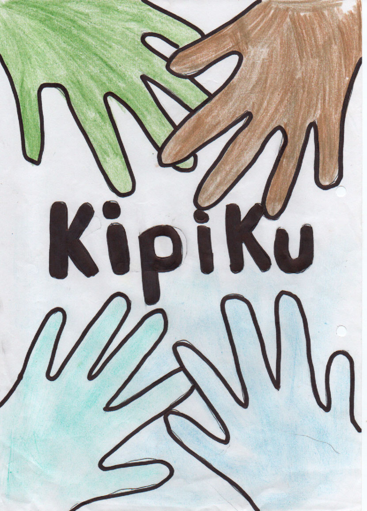
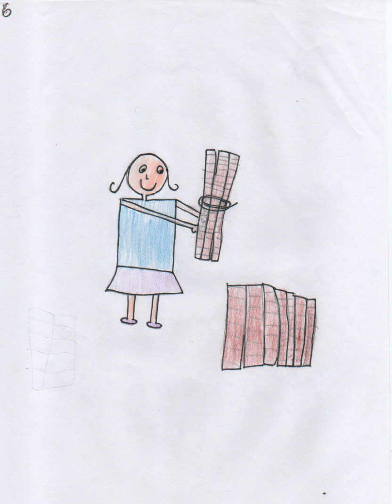

Dibujo de las y los niños de la Comuna de San José de Cocotog, en Quito, Ecuador. Foto: Composición realizada por Giovanni Salazar, de Agenda Propia.
Entre pakllas, pingullos y flautas: así suena la niñez en Cocotog
Las niñas y los niños del pueblo indígena Kitu Kara hacen sus propios instrumentos musicales como las pakllas. Desde Quito, capital de Ecuador, recuperan sus músicas tradicionales y los saberes de sus ancestros.
Por: Nina Valda Paola Cecilia.A 12 kilómetros del centro de Quito, en la comuna San José de Cocotog, suenan las pakllas de una veintena de niñas y niños. Con sus propias manos estos niños fabricaron los instrumentos. Para cada uno necesitaron entre 8 y 10 tubos de carrizo. La paklla, o la “palla” en lengua kichwa, es el instrumento principal del ensamble musical que llena de ritmos tradicionales y de alegría todos los rincones de la comuna. Las y los pequeños intérpretes continúan la tradición cultural del pueblo indígena Kichwa Kitu Kara.
“La comuna es muy grande, está llena de árboles y además hay quebradas donde hay mucha naturaleza, ojos de agua. Abajo también podemos encontrar un río, hay senderos”, describe Karen Simbaña Gualoto, de 15 años, al mismo tiempo que señala hacia los cuatro puntos cardinales.
San José de Cocotog, de 5.000 habitantes, tiene una extensión de 66 kilómetros cuadrados y se ubica entre los 2.400 y los 2.500 metros sobre el nivel del mar, de acuerdo con datos del municipio. Diego Guamán Álvaro, de 8 años, dice que “es fría casi a las 6:00 de la mañana”.
Para su comunidad, lo más importante que tiene Cocotog es el legado cultural y musical expresado en sus fiestas y danzas rituales que se ejecutan acompañadas por la música de las pakllas, flautas y pingullos. Sin embargo, “en la comuna ancestral de Cocotog solo quedan dos personas que tocan el pingullo, que es un instrumento característico de ese lugar y lamentablemente se está perdiendo”, menciona Saywa Kuyllur Escola Chachalo, gestora del proyecto Kipiku de Saberes Musicales que busca volver a encariñar a las niñas y los niños con sus raíces a través de la elaboración e interpretación de instrumentos andinos en su territorio.
Los Kitus son considerados entre los primeros habitantes del territorio de Ecuador. Su existencia data del año 500 a.C y su mayor consolidación como pueblo se dio en la época preinca, según relatos históricos (ver al final del artículo más información del contexto histórico del pueblo Kitu Kara). Sus raíces todavía persisten y la música es uno de sus legados.
Montaña, paklla y música. Foto: dibujo de Charik Guatemal Escola.
La iniciativa Kipiku de Saberes Musicales, ganadora de la convocatoria “Agenda Cultural Participativa 2021”, de la Secretaría de Cultura del Distrito Metropolitano de Quito, trabaja con 19 niños y adolescentes de Cocotog enseñándoles a elaborar y ejecutar la paklla.
También formaron un ensamble musical intergeneracional con pingulleros y flauteros Kitu Karas de la región. El objetivo, de acuerdo con Saywa, fue aplicar la metodología del “nishpa-rurashpa/ diciendo-haciendo”, propia de las y los abuelos kichwas, para así incentivar a las nuevas generaciones a abrazar su legado musical, oral y cultural. Kipiku significa cargamento. “Un kipi es la maleta, cargada de elementos que, en los pueblos, se mantiene como repositorio de la sabiduría y que nos acompaña”, cuenta Saywa, facilitadora y creadora del proyecto junto a Raymi Guatemal, ambos además son profesores en el ensamble.
En San José de Cocotog también sobresalen los cultivos en las chacras o parcelas familiares. Al mismo tiempo diversas actividades de comercio, industria textil, emprendimientos y construcción, entre otras, agilizan el flujo de transporte desde y hacia el centro de Quito. “En la comuna hay tiendas, escuelas, guarderías, casas y muchas cosas más”, destaca Mayerly Ataballo, de 9 años, mientras que Jeremy Otavalo, de 12, complementa que “también tiene una cancha para jugar fútbol” y luego de entrecerrar los ojos corrige urgente: “¡tiene dos canchas! …también tiene un centro de salud”.
Comuna San José de Cocotog. Foto: página web institucional.
Cocotog y su niñez de pakllas, pingullos y flautas
En noviembre de 2021, la voz del inicio del proyecto musical corrió por la comuna, las niñas y los niños oyeron la convocatoria y respondieron al llamado. Las madres y los padres también se entusiasmaron. Esta iniciativa consistía en reunir a un primer grupo de niñas, niños y jóvenes para enseñarles sobre sonidos autóctonos, instrumentos musicales y sobre todo los valores que representan a los Kitu Kara, uno de los 14 pueblos indígenas que hay en Ecuador.

Logo del Proyecto Kipiku de Saberes Musicales. Foto: dibujo de Elder Otavalo.
Los encuentros iniciaron un 13 de noviembre con el ritual de pedir permiso a los apus, taitas y mamas y así tener armonía para desarrollar las distintas actividades de la iniciativa. “El primer día nos hicieron sentar en un círculo y pusieron como una jarrita en el suelo y pusieron unos palitos como si fuera un sendero. Pusieron fuego al centro e hicieron encenderla, luego nos dijeron que cogiéramos los palitos y pidamos un deseo y pongamos ahí”, explica Karen, aludiendo al momento de entrega espiritual de la actividad para el pueblo Kitu Kara.
Luego trabajaron en la elaboración de las pakllas, “primero habíamos utilizado el carrizo, que la Saywa nos dio”, indica Mateo. El carrizo es la materia prima para armar la paklla y el pingullo. “Es como una caña. Es una planta y una vez crecida, se saca, después hay que volver a sembrar, pero de eso van saliendo raíces, raíces y se va criando solo. Cuando ya está lista comienza a amarillear, en eso se va sacando. Primero ponen en el agua para pelar y para no cortarse las manos, lo secan y de ahí ya se va partiendo”, cuenta emocionada Zoila Ataballlo, mientras observa cómo su sobrino Diego interpreta alegremente un ritmo de Yumbos.
La paklla, de acuerdo con estudios realizados por el arqueólogo Richard Zeller en 1970, y por el músico Adrián Rodríguez en 2018, es posiblemente uno de los instrumentos de viento más ancestrales de Ecuador: un aerófono pánico preincaico que se remonta a la era paleolítica o neolítica inferior. Su interpretación no se limita a las festividades, aunque ahí se engalanan. En San José de Cocotog tienen celebraciones sustentadas en el calendario agro-astronómico de siembras y cosechas, ahora Pascua Chica y Pascua Grande. El sonido de la paklla acompaña además muchos quehaceres cotidianos. “Mi ñaño (hermano) andaba con esto, toque y toque todo el día en la calle, en la casa, salía con su paklla. También me contaba mi abuelito que tocaban cuando se iban a pastar animales, llevaban (sus pakllas) para estar entretenidos”, cuenta Betty Álvaro, mamá de Diego.
Paklla, instrumento de viento elaborado con planta de carrizo. Foto: Nina Valda.
Eligiendo los carrizos. Foto: Saywa Kuyllur Escola. Proyecto Kipiku de saberes musicales.
“Después el profesor Raymi nos dio a elegir los carrizos, pero tenían que ser de los más gruesos a los más delgados”, indica Jeremy intentando modelar los grosores en los dedos pulgar e índice. “Luego le lijamos por dentro y por fuera. Tenemos que soplar y hacer así porque sino el polvo se quedaba”, dice urgente Mayerli, mientras sopla uno de los tubos de la paklla que tiene entre manos. Una vez listos cada uno de los ocho tubos, se procedió a afinarlos. “Se prueban bien los sonidos. Hay que comparar con los del profe Raymi, porque de él suenan diferentes, entonces nosotros soplamos para ver si suena igual”, explica con preocupación Mayerli. “Para terminar este procedimiento, nos enseñó cómo lijarle la parte de abajo y luego empezamos a formarlas”, acota Jeremy.
Lijando y cortando con la ayuda de Mashi Raymi. Foto: Saywa Kuyllur Escola. Proyecto Kipiku de saberes musicales.
Llega el momento de unir todos los carrizos y formar la paklla. “La parte más difícil fue cuando estábamos intentando unirlas a todas, porque a cada rato las intentabas unir y se caían, y tocaba volver a unirlas. Pasamos bastante tiempo ahí”, relata Karen. “Luego la Saywa nos dio estas cositas (varas de madera) y dijo que pongamos igualito en los dos lados. Luego los acomodamos del más pequeño al más grande y se les iguala para que estén bien alineadas”, indica Mayerli al repetir los movimientos en su paklla. Para terminar “nos dieron unos hilitos del color de los arcoíris y nos ayudaron a coser”, finaliza Mateo.
Lijando y atando los carrizos con Mashi Saywa. Foto: Saywa Kuyllur Escola. Proyecto Kipiku de saberes musicales.
“Luego ya estaba afinado todo y nos enseñaron a entonarla”, dice Jeremy. Karen se sorprende por la rapidez y agilidad con la que aprendieron a interpretar el instrumento: “ya teníamos las pakllas y en esa misma clase pusieron una pantalla donde nos indicaban cómo se tocaba. Después a la siguiente clase nos hicieron practicar un ritmo”. Para recordar cuáles eran las melodías, Jeremy cuenta los tiempos con sus manos, cuál pequeño músico dice “un ritmo era de 2, 4 y 6, el otro tono era 3, 2, 1”, refiriéndose a la música de los Yumbos y los Danzantes respectivamente.

Mayerli construyendo su paklla. Foto: dibujo de Mayerli Ataballo.
En un segundo ensayo se propicia un diálogo de saberes y conocimientos musicales entre los flauteros de Cotocollao y los pingulleros de Cocotog y Zámbiza. “En la siguiente clase vinieron unas personas que ya sabían tocar..., empezamos a practicar con ellos. Nos hicieron tocar dos ritmos en dos tonos diferentes, de ahí ya aprendimos otros dos ritmos”, menciona Karen. Mientras tanto, Jeremy cuenta el pasaje que más le llamó la atención: “y nos contaron su historia. Desde que eran niños aprendieron a ser pingulleros de esta comuna, que solían venir cargando leña y con el pingullo sabían venir tocando”.
Sus largas horas de ensayo se plasmaron en una grabación profesional. Saywa cuenta que “hubo todo un estudio de grabación que se transportó hasta la comunidad y ellos (los wawas) contentos porque se grabaron los temas y ellos mismos se escucharon”.
Este legado viene de sus ancestros.
Armando las pakllas. Foto: Sumak Bastidas.
Niñez y sonidos Kitu Karas vibrando a través de una paklla
La capilla del Museo de la Ciudad es un templo de dorados y opulentos retablos barrocos construidos en 1565, ubicada en pleno centro histórico de Quito, forma parte de las iglesias patrimoniales y de su cuidado legado colonial. Son las 11:00 de la mañana del domingo 19 de diciembre de 2021 y en la fría capilla no habrá misa, sino la presentación del Ensamble Musical de Pakllas, Pingullos y Flautas de la Comuna de Cocotog.
En lo que antiguamente fue la sacristía, se escuchan monedas chocar, se ven penachos, escudos, rebozos y sombreros, todos estos elementos son parte de la vestimenta del grupo de baile de los danzantes, invitados desde la parroquia de Zámbiza. En el altar, las niñas y los niños kichwas kitu karas de Cocotog se posicionan delante de las imágenes de la Virgen del Rosario, de San Francisco y de Santo Domingo.
Las prendas de los pequeños intérpretes contrastan con el color pan de oro del retablo. Karen cuenta que “ese día, estaba vestida de anaku y peinado. Pues me encanta mucho estar vestida así”. Mayerli, junto a su abuela Rosa, detalla cada uno de sus valiosos atavíos: “Lo que tenemos en la cabeza se llama lista, sirve para poder coger el cabello, que no se vaya de aquí para allá y para cubrirnos del sol cuando vamos a la chakra. Esto que llevo en el pecho se llama sábana. Esto es el anaku (falda), mi abuela me hace desde pequeñita mis anakus y me sujeto con mama chumpis (fajas), en el cuello tengo perlas”. Mateo no quiere quedarse atrás: “tengo un sombrero azul, y mi poncho rojo, mi camisa blanca, mi pantalón blanco y las alpargatas blancas. Lo que más me gusta es mi poncho”.
Mateo y Mayerli felices y orgullosos de elaborar e interpretar sus pakllas. Foto: Nina Valda.
Las familias están sentadas esperando, ansiosas, la presentación. El lugar queda unos minutos en silencio y luego irrumpe el tambor para iniciar el ritmo. Las pakllas son acercadas a sus pequeños labios y la vibración producida por sus soplidos brindan sonidos de trance. “En la presentación estaba muy emocionada”, dice Karen. Jeremy reconoce otras intensas sensaciones: “algunos nos pusimos nerviosos, más que todo en la presentación del Centro Histórico”. Se impregna en la capilla un sentimiento de fuerza, resistencia, lucha y permanencia.
Un sonido, un canto, una paklla, materializa la historia de un pueblo milenario que continúa viviendo a través de la música y esta a su vez se prolonga en manos de las y los wawas. Saywa insiste en que “cada pueblo y comunidad tiene un sonido que le distingue de la otra, pero lo importante es que el sonido no muera, porque sino nadie más lo toca, nadie más lo escucha”. Y como Karen menciona: “para nosotros es muy importante ya que algunas personas de antes de nosotros tocaban esto y ahorita ya se está perdiendo y pues queríamos aprender a tocar para rescatar eso y que no se quede en el olvido”.
Presentación del Ensamble de pakllas, pinguyos y flautas de la comuna de Cocotog en la Capilla del Museo de la Ciudad-Quito Foto: dibujo de Charik Guatemal Escola.
El mashi Raymi, gestor y tallerista, resalta uno de los preciados resultados del encuentro con niñas y niños. “Ellos despiertan la necesidad de la danza, de la música tradicional, entonces unos niños decían que iban a ser músicos, paklleros con tambores. Muchos decían “yo voy a ser pingullero y voy a hacer bailar a toda la comunidad” o sino “yo voy a tener un montón de danzantes grandes, yo les voy a hacer bailar”.
Formar parte de esta experiencia permite a niñas y niños no solo aprender a elaborar un instrumento, sino a volver a encariñarse de sus raíces Kitu Karas de forma tangible y en comunidad. Karen explica cómo se siente después del proyecto: “he visto que hay aquí danzantes que son ya de antes mismo y he visto que saben salir a presentaciones y en eso están mis abuelitos. También mis dos abuelos hablan kichwa, también saben hacer anakus. Me gustó la parte en la que nos pusieron a practicar para hacer la música, el día de la grabación y así para empezar a tocar la paklla. También me gustó representar a mi comunidad con ellos”.
Ahora Diego afirma en voz alta y con decisión: “yo quiero ser el próximo pingullero de Cocotog”.
A la fecha, niñas y niños interpretan sus pakllas en familia. El cariño puesto en la elaboración de sus instrumentos permanece incluso finalizado el proyecto y concluídos los ensayos del ensamble. La emoción de compartir lo aprendido trasciende a más espacios, Rosa Álvaro, mamá de Mayerli, recuerda la vez que la paklla de su hija sufrió un pequeño accidente: “una de esas lleva a su paklla en la mochilita a la escuela, seguramente para querer mostrarles y enseñarles a sus compañeritos. A la vuelta, no sabemos cómo, pero se da cuenta de que su pakllita estaba trizada, se había roto y así se puso muy triste, desde esa vez tiene más cuidado porque ella le tiene un valor muy sentimental”. Mayerli acota “me encanta mi paklla, porque se puede tocar muchas cosas, la toco cuando estoy sin hacer los deberes de la escuela”.
El Ensamble de Pakllas, Pingullos y Flautas de la Comuna de Cocotog. Foto: Kuyllur Escola. Proyecto Kipiku de Saberes Musicales.
El pueblo Kitu Kara y sus comunas ancestrales en Kitu (Quito)
Los Kitus están considerados entre los primeros habitantes del territorio ecuatoriano. Las leyendas cuentan que poco después del año 500 a.C., un gran cataclismo posiblemente ocasionado por la explosión del volcán Pululahua provocó el catastrófico fin de diversas poblaciones en los lugares aledaños.
Aparece entonces la figura del líder Tumbe, quien llegó a estas tierras por el paraje de Caracas hasta Sumpa, conocida hoy como Santa Elena, al sur occidente costero, según la historiadora Marcela Costales (2017). Desde ahí envió una excursión para descubrir y examinar otras tierras, pero sus hombres jamás volvieron. Cuando Tumbe murió, el guerrero Quitumbe, su hijo, decidió hacer la expedición pendiente y se adentró en el mar hasta asentarse en una isla. Las difíciles condiciones le obligaron a buscar mejores tierras y se dirigió hacia la dura y fría cordillera, donde finalmente llegó a un verde valle al que llamó Quitu.
Esta historia originada en la más remota antigüedad desemboca en la conquista de los Caras, liderados por Carán y venidos desde Manabí, cerca del año mil. Según el historiador Enrique Ayala Mora (2019), aproximadamente 200 años tardaron los Caras en conquistar a los Kitus y tras la muerte de su líder integraron sus creencias y religión conformando el poblado preinca Kitu Kara.
A la fecha, la descendencia de este pueblo indígena continúa resistiendo y viviendo en estas tierras. Sin embargo, el desplazamiento forzado ha hecho que se reubiquen en las zonas rurales y periféricas de la provincia de Pichincha, en los cantones de Quito, Mejía y Rumiñahui, denominando su organización geográfica y sociopolítica como “comunas”.
Bibliografía complementaria:
- Ayala M. Enrique. 2019. Resumen de historia del Ecuador (Tercera ed.). Quito: Corporación Editora Nacional. Quito - Ecuador.
- Costales P. Marcela. 2017. Quitumbe el gran padre ancestral. Biografías de hombres y mujeres forjadores de la patria. Secretaría de pueblos, movimientos sociales y participación ciudadana. Presidencia de la República del Ecuador. Quito - Ecuador.
Nota. Esta historia hace parte de la serie periodística Dibujando mi realidad, #NiñezIndígena en América Latina, cocreada con niños, niñas, periodistas y comunicadores indígenas y no indígenas de la Red Tejiendo Historias (Rede Tejiendo Histórias), bajo la coordinación editorial del medio independiente Agenda Propia.